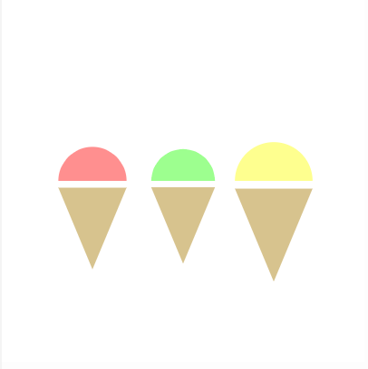

1. Recreate the above image by calling the function iceCream() in a for loop. Use a random diameter for each call to iceCream().
2. Write a program that implements the above sketch. Complete function CtoF() that receives a temperature in Celsius (°C) as an arguement, and returns the temperture back Fahrenheit (°F). The forumula is F° = (C° × 1.8) + 32.
3. Rewrite the bouncing ball sketch below to use functions inside an object. The code provided has an object called ball with properties x, y, xspeed, yspeed. Try adding moving display(), move() and bounce() into the object itself. Don't forget to use this.___ to reference the the object's properties inside its functions and call the functions on the object like ball.display().